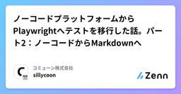

コミューン株式会社のフィード
https://zenn.dev/p/dev_commune
コミューン株式会社のメンバーによる技術発信を行います。
フィード

「いつか直す」が「すぐ直す」に変わった — レビューを「振る舞い」と「コード」に分けたら、PdMもバグを直せるようになった
コミューン株式会社のフィード
こんにちは。コミューンでエンジニアリングマネージャーをしている近藤です。この数ヶ月で私たちの開発プロセスに起きた変化について書きます。ひとことで言うと、非エンジニアのPdMがバグフィックスや小さな改善のPRを出し、エンジニアはコードレビューだけしてマージする、という体制が実際に回り始めました。「AIでPdMもコードが書けるようになった」という話は世の中に溢れていますが、この記事で書きたいのはツールの話ではなく、責任分界の話です。PRのレビューを「振る舞い」と「ソースコード」に分離する。この再設計と、それを成立させるプレビュー環境という基盤が揃ったとき、これまで構造的に後回しになり続け...
2日前

ノーコードプラットフォームからPlaywrightへテストを移行した話。パート2：ノーコードからMarkdownへ 3
3
コミューン株式会社のフィード
はじめにパート1では、なぜノーコードのテストプラットフォームを離れたのか、そしてどのように移行計画を立てたのかについて解説しました。今回は実践編です。ノーコードのテストケースを、QAやPdM（プロダクトマネージャー）が実際に読んで検証できるプレーンなMarkdownへと変換します。変換を行うスキルパイプライン、Arrange-Act-Assert（AAA）フォーマット、テスト用パスワードをGitに含めないための工夫、そして次回同じことをする前に知っておきたかったことについて解説します。 なぜ直接Playwrightではなく、Markdownなのか前回の記事で触れた通り、Ma...
8日前

Claude Code Hooks で「rules を編集したら必ずセルフレビュー」を自動化する
コミューン株式会社のフィード
はじめにある日 Claude Code のセッションを眺めていて、.claude/rules が毎回コンテキストに読み込まれていることに気づきました。「設定しているはずなのに、なんでだ？」と疑問に思い、Claude Code 自身にききました。プロンプト@.claude/rules/ の記法は Claude Code の公式仕様に準拠しているか公式ドキュメントと照合してレビューしてとか。Claude Code 曰く YAML の「リスト」で書く必要があるということです。# .claude/rules/frontend/testing.md---paths: a...
1ヶ月前
ノーコードプラットフォームからPlaywrightへテストを移行した方法。パート1
コミューン株式会社のフィード
はじめに長年、私たちの組織は手動でのテスト運用に頼っていました。軽微な変更をその都度手動で検証することがどれほど非効率的であるかは、誰もが同意するところでしょう。そのため、自動E2Eテストの取り組みが始まったときは、本当にワクワクしました。最初の選択肢はノーコードプラットフォームでした。自動テストという素晴らしい新世界への緩やかな入門ステップとして、その選択は十分に理にかなっていました。主要な機能をカバーするまでには多くの時間がかかりましたが、コードに変更を加える際の安心感はかつてないほどでした。 ノーコード自動化の限界優秀なエンジニアであれば、そんなハネムーン期間が長く...
1ヶ月前
dependabot のマージ戦略を自動化し、AIレビュー＆マージする action を作る
コミューン株式会社のフィード
dependabot の滞納問題dependabot のレビュー、溜まっていませんか？dependabot のPRレビューに割く時間が取れず、バージョン差異が肥大化するdependabot による依存パッケージのUpdate PRは、チームのマージ運用ルールを決めていたり、意識的に watch して取り込んでいったりしないと、中々マージされずにPRが滞納されてしまうということが起こり得ますまた、システム規模が大きいほど、パッケージ差異による開発生産性の低下脆弱性の問題もありますし、最新版の追従ができていないことで時を重ねるほどにバージョンの差異が広がってしまい、...
2ヶ月前
開発効率を落とさないローカル開発のシークレット管理方法
コミューン株式会社のフィード
はじめにローカル開発におけるシークレット管理の方法は色々あると思います。最近はサプライチェーンアタックへの警戒が強まっていたり、生成AIがリポジトリを走査する中で秘匿情報を意図せず読み取ってしまったり、誤ってコミットを作ってしまう可能性もあります。こうした状況を踏まえて、改めて落としどころを考えてみました。なお今回は Node.js + TypeScript と Google Cloud を使っていますが、考え方自体は言語やクラウドに依らないので、同じアプローチが適用できます。 考え方 最小権限しか与えないどこまで仕組みやルールを整えても、各開発者のPCにシークレットを...
3ヶ月前
カスタム PubSub トピックを使って Cloud Build トリガーのビルド完了後に次のトリガーを自動実行する
コミューン株式会社のフィード
はじめに以前に Cloud Build がおわったら、別の Cloud Build トリガーがキックされる構成をつくりたく Cloud Build の Webhook トリガーを試してみました。https://zenn.dev/dev_commune/articles/4927367e972a18相変わらず cloud-builds トピックをトリガーとする Cloud Build を作成することはできませんが、今回は「カスタム PubSub トピック」を使う方法を見つけたので紹介します。 カスタム PubSub トピックとは？By default, Cloud Bui...
5ヶ月前
今年の振り返り：「内発的動機」を助長できた(かも)
コミューン株式会社のフィード
はじめにこんにちは、近藤です。年の瀬ですね。２歳の息子が「ママ大好き。パパは大好きじゃない」なんていうようになりまして、成長は喜ばしいものの、心も体も少し寒いです。今年はいろいろなことがありました。その中で今のプロジェクトチームが最高のチームになったと胸を張って言えること。これが今年一番の成果かもしれません。自分のための整理も兼ねて、チームづくりを通じて学んだことを整理しておきます。※今回は個人の振り返りなので、プロジェクト自体の詳細には触れず、あくまで個人の感想として書いています。もしご興味あれば以下から。https://tech.commune.co.jp/entr...
7ヶ月前
LightGBM ランク学習: lambdarank vs rank_xendcg
コミューン株式会社のフィード
本記事はCommune Developers Advent Calendar 2025の 16 日目の記事です 🎄 はじめにLightGBM の Learning to Rank には、lambdarank と rank_xendcg の 2 つの objective があります。lambdarank は以前から利用していたのですが、rank_xendcg はあまり試したことがなく、rank_xendcgに関する記事もあまりなかったため気になり調べてみました。公式ドキュメントには「rank_xendcg は高速で同等の性能」と書いてあるが、本当にそうなのか？xENDCG の原論...
7ヶ月前
MySQLでさっき実行したクエリを上手に探したい
コミューン株式会社のフィード
はじめにこの記事はCommune Advent Calendar 2025、19日目の記事ですhttps://qiita.com/advent-calendar/2025/communeMySQLでは実行したクエリをログ出力できますが、システムが発行するクエリなども含まれるので「開発中にさっきアプリケーションから実行したクエリを確認したい」となると、何らかの条件で絞り込む必要が出ます属性としてcommand_typeが使えそうだったので、どのような値が入りどういう意味を持つのか探してみました まずログ出力 ログ出力探すと沢山の記事が見つかります-- 1. 出力した...
7ヶ月前
Gemini 3 Flash × LangChain によるLLMバッチ処理プラクティス
コミューン株式会社のフィード
はじめに本記事はCommune Developers Advent Calendar 2025の22日目の記事です🎉https://qiita.com/advent-calendar/2025/commune最近実務で大量のテキストデータをLLMでバッチ解析するパイプラインを実装しました。LangChain と Gemini を利用しているのですが、実装する際に気をつけたいポイントを紹介したいと思います。LangChain 1.0.0 のリリースや Gemini 3 Flash の登場など、最新のアップデートを反映した内容となっています！!本記事に記載されている情報は2...
7ヶ月前
JavaScript linter、BiomeとOxlintのポジショニングの比較
コミューン株式会社のフィード
本記事はCommune Developers Advent Calendar 2025の21日目の記事です。 はじめにこれまでは、もしかしたら、linterの選定なんて気にしすぎる必要はなくて、新しい良さそうなのが出たら乗り換えれば良い・・・というノリだったかもしれません。でもこれから、AIガードレールを目的として、カスタムルールヘビーな時代が来ます。そうなると、linterは、開発システムに深く組み込まれ、変更コストが高いフレームワークのような扱いに近づきます。よって、自分たちに合ったlinterを見極める必要が出てきます。そんなモチベーションで、BiomeとOxlintの現...
7ヶ月前
Github Actionsで別リポジトリでテストを実行する
コミューン株式会社のフィード
本記事はCommune Developers Advent Calendar 2025の20日目の記事です。 はじめに以前、Yoshi-kenさんがデータパイプラインの安全性を確保する仕組みについてという記事を書きました。バックエンドのスキーマ変更がデータパイプラインに与える影響を事前に検知する仕組みの全体像を紹介した記事です。本記事では、その仕組みの中で別リポジトリにCI実行を委譲する方法について調査しました。 背景Yoshi-kenさんの記事でも触れられていますが、アプリケーションのバックエンドサーバーのDBスキーマ変更がデータパイプラインを破壊することがあると思います...
7ヶ月前
Web Speech API と Translator API で音声入力による翻訳
コミューン株式会社のフィード
この記事は、Commune Developers Advent Calendar 2025 シリーズ2 の20日目の記事です。みなさまハッピーコーディングライフをお過ごしですか？たまには何かブラウザのAPIで遊んでみたいなと思い立ったので、今回は Web Speech API と Translator API を利用した音声入力による翻訳アプリケーションを作ってみました。 サンプル追加でライブラリを必要とせずにこれができる世の中になるなんて本当に感慨深いよねと Claude Sonnet と話しながら開発したデモはこちらです。!APIのサポート状況が限定的なため最新版の C...
7ヶ月前
[MagicPod] 安定的に定期実行させる旅に出た私はノーコードツールの裏側を理解する重要性にたどり着いた。
コミューン株式会社のフィード
はじめにCommune Developers Advent Calendar 2025 シリーズ2 の19日目の記事です。こんにちは、コミューン株式会社でQAエンジニアを担当しています、KOYOです。皆さんは、自動テスト実装時にはすべてのアサーションは通ったのに、定期実行で失敗するテストケースに出会ったことはありませんか？今回は、メンテナンス時の疑問を経て、より安定したテストにするには本質的な裏側の理解が必要だと感じたことについて書きます。 前提現在、私のチームでは今年から「MagicPod」を導入してテスト自動化を進めています。基本的な実装フローは以下の通りです。...
7ヶ月前
Zodをv3からv4へアップグレードしました
コミューン株式会社のフィード
はじめにこの記事は、Commune Developers Advent Calendar 2025 シリーズ2 の18日目の記事です。私たちのチームでは、バックエンドにおけるAPIリクエスト・レスポンスの型定義やバリデーションにZodを採用しています。バックエンド全体でより広範囲にZodを活用していく計画があり、将来の拡張に備えてメジャーバージョンアップを実施しました。また、ZodスキーマからOpenAPI仕様書を生成するために zod-to-openapi を利用していますが、Zodのアップグレードに伴い、zod-to-openapiも併せてアップグレードしました。更新バー...
7ヶ月前
Apple IntelligenceのFoundation ModelをFlutterから簡単に使う
コミューン株式会社のフィード
本記事はCommune Developers Advent Calendar 2025の18日目の記事です。https://qiita.com/advent-calendar/2025/commune FlutterでFoundation Modelを試したいFoundation Model試したいなら、Swiftを書けばいいんだけなんですが私は普段から個人開発で使いなれているFlutterで試してみたかったのです。どうしても。 Foundation ModelとはFoundation Modelとは、Appleが提供する、オンデバイス（デバイス内）で動作する大規模言語...
7ヶ月前
Next.js App Routerの状態管理 判断ガイド
コミューン株式会社のフィード
!この記事はAIと対話しながら執筆しています。内容の正確性については筆者が確認していますが、誤りがあればご指摘いただけると幸いです。本記事はCommune Developers Advent Calendar 2025の13日目の記事です。 はじめにこの記事は、筆者がチームで「この状態を何で扱うか」を判断するにあたりガイドラインを整理したものです。このガイドラインの目的は以下の通りです：一定の品質を担保できる判断基準を整備する「状態を増やしすぎない」ための指針を明確にするただし、ここで紹介する選択肢がすべてではありません。また、ここで示す判断フローは一例であり、プ...
7ヶ月前
Linearから学ぶ「スプリントしない」チーム開発
コミューン株式会社のフィード
はじめに本記事はCommune Developers Advent Calendar 2025の12日目の記事です。最近チームのタスク管理ツールとしてLinearを使い始めました。使ってみて気づいたのは、Linearが「スプリント」ではなく「サイクル」という用語を使っていることです。公式ドキュメントを読むと、これは単なる言い換えではなく明確な思想の違いが反映されているのだとわかりました。この記事では、Linear MethodやLinearの公式ドキュメントを引用しながら、スプリントとサイクルの思想的な違いを整理します。スクラムを否定する意図は全くありません。また、これは個人...
7ヶ月前
Next.js + Supabase pgmq で非同期 Worker パイプラインを実装する
コミューン株式会社のフィード
本記事はCommune Developers Advent Calendar 2025の11日目の記事です はじめにアプリケーション上でで重い処理（外部API呼び出し、大量データ処理など）をリクエスト中に実行すると、レスポンスが遅くなりUXが悪化します。本記事では、Supabase に内蔵されている pgmq（PostgreSQL Message Queue） を使って、非同期WorkerパイプラインをNext.js上で実装する方法を紹介します。追加インフラ不要（Supabase のみ）DBトランザクションと統合可能シンプルな実装でリトライ・エラーハンドリングも対応＊...
7ヶ月前